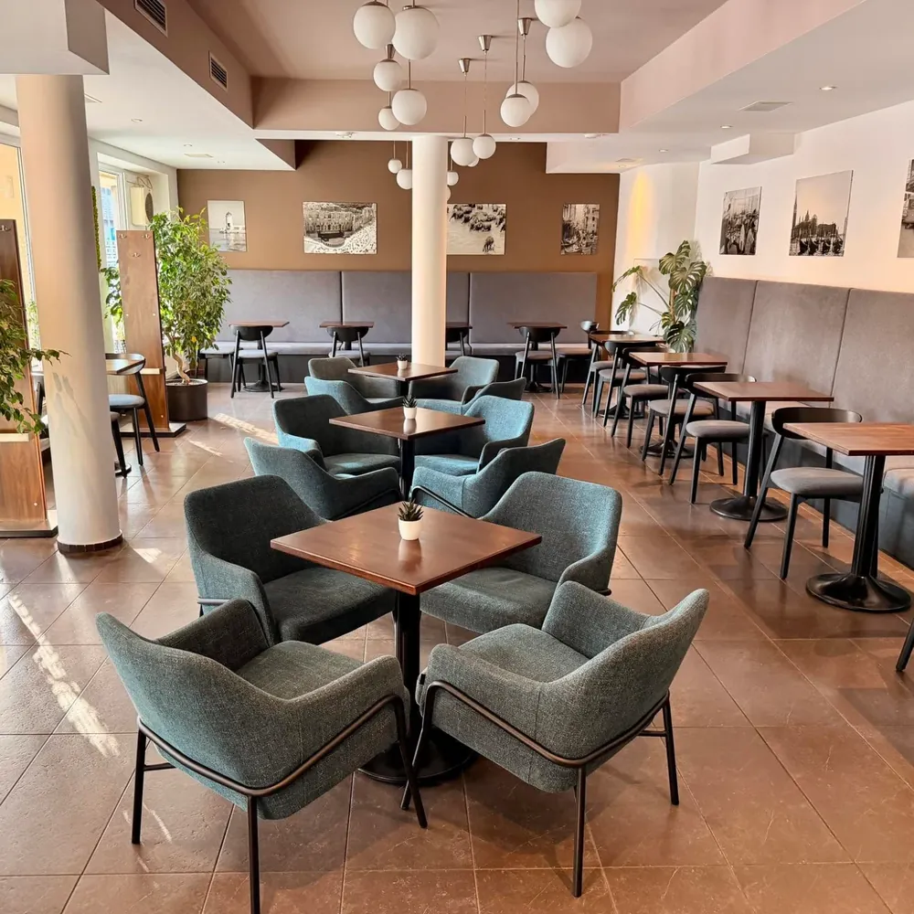
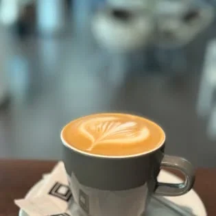

Kaviareň · Bezručova · Trenčín
CaféOrbis
„Fajčiarska kaviareň s moderným dizajnom v širšom centre mesta.“
— z ich predstavenia na Facebooku4,7 ★Google · 159 hodnotení
od 7:30Po–Pi · overiť
Zadarmoparkovanie

